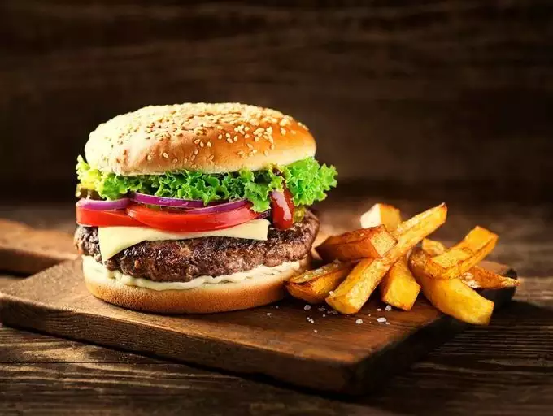

Hamburger and Fries

Description
Simple instructions on making a burger and fries for a midweek
family meal.
The ingredients are available in any grocery store.
Ingredients
- Beef burgers, pack of four quarter-pounders
- Burger buns with sesame, large
- Lettuce
- Tomato
- Pickle slices
- Cheese slices
- Chunky fries
- Green beans
- Ketchup
- Mayonnaise
Steps
- Heat burgers in air fryer for 10 minutes at 400F,
turning once
- Toast buns
- Cook fries in stove for 25 minutes at 450F
- Cook green beans on stove top in boiling water
for five minutes
- Assemble burgers, layering cheese above and below
the patty
- Layer tomato, pickle and lettuce
- Add mayo, ketchup to taste
- Serve with fries and green beans on the side